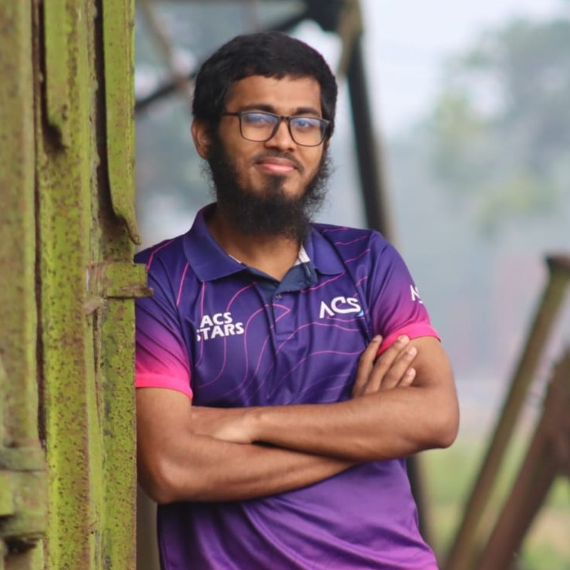

Software Development
Turning requirements into working, readable software — data modelling, program structure and code other people can maintain.
Dhaka, Bangladesh
Aspiring Software Engineer · Full-Stack Developer · Cybersecurity Enthusiast
Building clean, secure and dependable software — one project at a time.
I am an ICT undergraduate at Bangladesh University of Professionals with a focus on web and backend development, and a growing interest in cybersecurity. Alongside my studies I take on freelance work and help run my university’s IEEE Student Branch.

01 — About
I am an undergraduate student of Information and Communication Technology at Bangladesh University of Professionals (BUP), currently in my third year of the BICE programme. My coursework and personal projects sit at the intersection of software engineering and applied computing, and I enjoy the parts of the work where careful thinking matters most: data modelling, API design, and writing code that other people can read.
My main areas of focus are software development, web development and backend development. I am also actively learning cybersecurity — currently at a foundational, self-taught level — because I believe security should be part of how software is built rather than something added at the end.
Outside the classroom I take on freelance work through Upwork, which has taught me to scope tasks, communicate with clients and deliver on deadlines. I also serve as Treasurer of the BUP IEEE Student Branch, where I manage budgets and event finances for our student community.
02 — Skills
Overall level: Intermediate. These are the areas I work in day to day, across coursework, freelance work and personal projects.
Turning requirements into working, readable software — data modelling, program structure and code other people can maintain.
Building responsive, accessible interfaces for the browser and wiring them up to the services behind them.
Server-side logic, API design and working with databases to keep data consistent and queries predictable.
Foundational, self-taught level. I treat security as part of how software is built rather than something added at the end.
04 — Education
Ongoing
Currently in 3rd Year, 2nd Semester.
2022
GPA 5.00 out of 5.00
2020
GPA 5.00 out of 5.00
05 — Experience & Leadership
Freelance
Independent client work delivered through the Upwork platform, covering development tasks, requirement gathering and on-time delivery.
Leadership
Responsible for the student branch’s finances: budgeting, expense tracking and financial reporting for branch events and activities.
07 — Contact
Open to internships, freelance projects and collaboration. The fastest way to reach me is email.
Have an internship, a freelance project or a collaboration in mind? Send me an email and I will get back to you as soon as I can.
Connect via EmailThis opens your own email app with akibjalal16@gmail.com already in the To field.